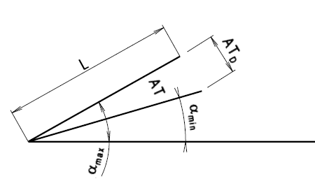

Angular tolerances AT and ATd
Earlier reference for existing drawings; these are not current ISO requirements for new designs.

Angular tolerances AT and ATd · L | 10 [mm] – L 63–100 [mm]
| Grade | Symbol | L | 10 [mm] | L 10–16 [mm] | L 16–25 [mm] | L 25–40 [mm] | L 40–63 [mm] | L 63–100 [mm] |
|---|---|---|---|---|---|---|---|
| 1 | AT AT_D | 0°0′10″ 0.5 max. | 0°0′8″ 0.4…0.6 | 0°0′6″ 0.5…0.8 | 0°0′5″ 0.6…1.0 | 0°0′4″ 0.8…1.3 | 0°0′3″ 1.0…1.6 |
| 2 | AT AT_D | 0°0′16″ 0.8 max. | 0°0′12″ 0.6…1.0 | 0°0′10″ 0.8…1.3 | 0°0′8″ 1.0…1.6 | 0°0′6″ 1.3…2.0 | 0°0′5″ 1.6…2.5 |
| 3 | AT AT_D | 0°0′26″ 1.3 max. | 0°0′20″ 1.0…1.6 | 0°0′16″ 1.3…2.0 | 0°0′12″ 1.6…2.5 | 0°0′10″ 2.0…3.2 | 0°0′8″ 2.5…4.0 |
| 4 | AT AT_D | 0°0′40″ 2.0 max. | 0°0′32″ 1.6…2.5 | 0°0′26″ 2.0…3.2 | 0°0′20″ 2.5…4.0 | 0°0′16″ 3.2…5.0 | 0°0′12″ 4.0…6.3 |
| 5 | AT AT_D | 0°1′ 3.2 max. | 0°0′50″ 2.5…4 | 0°0′40″ 3.2…5 | 0°0′32″ 4…6.3 | 0°0′26″ 8…8 | 0°0′20″ 6.3…10 |
| 6 | AT AT_D | 0°1′40″ 5 max. | 0°1′20″ 4…6.3 | 0°1′ 5…8 | 0°0′50″ 6.3…10 | 0°0′40″ 8…12.5 | 0°0′32″ 10…16 |
| 7 | AT AT_D | 0°2′20″ 8 max. | 0°2′ 6.3…10 | 0°1′40″ 8…12.5 | 0°1′20″ 10…16 | 0°1′ 12.5…20 | 0°0′50″ 16…20 |
| 8 | AT AT_D | 0°4′ 12.5 max. | 0°3′ 10…16 | 0°2′30″ 12.5…20 | 0°2′ 16…25 | 0°1′40″ 20…32 | 0°1′20″ 25…40 |
| 9 | AT AT_D | 0°6′ 20 max. | 0°5′ 16…25 | 0°4′ 20…32 | 0°3′ 25…40 | 0°2′30″ 32…50 | 0°2′ 40…63 |
| 10 | AT AT_D | 0°10′ 32 max. | 0°8′ 25…40 | 0°6′ 32…50 | 0°5′ 40…63 | 0°4′ 50…80 | 0°3′ 63…100 |
| 11 | AT AT_D | 0°16′ 50 max. | 0°12′ 40…63 | 0°10′ 50…80 | 0°8′ 63…100 | 0°6′ 80…125 | 0°5′ 100…160 |
| 12 | AT AT_D | 0°26′ 50 max. | 0°20′ 40…63 | 0°16′ 50…80 | 0°12′ 63…100 | 0°10′ 80…125 | 0°8′ 100…160 |
| 13 | AT AT_D | 0°40′ 125 max. | 0°36′ 100…160 | 0°26′ 125…200 | 0°20′ 160…250 | 0°16′ 200…320 | 0°12′ 250…400 |
| 14 | AT AT_D | 1° 200 max. | 0°50′ 160…250 | 0°40′ 200…320 | 0°36′ 250…400 | 0°26′ 320…500 | 0°20′ 400…630 |
| 15 | AT AT_D | 1°40′ 320 max. | 1°20′ 250…400 | 1° 320…500 | 0°50′ 400…630 | 0°40′ 500…800 | 0°32′ 630…1000 |
| 16 | AT AT_D | 2° 500 max. | 1° 400…630 | 1° 500…800 | 1° 630…1000 | 0°40′ 800…1250 | 0°40′ 1000…1600 |
| 17 | AT AT_D | 4° 800 max. | 2° 630…1000 | 2° 800…1250 | 2° 1000…1600 | 1°20′ 1250…2000 | 1°20′ 1600…2500 |
Angular tolerances AT and ATd · L 100–160 [mm] – L 100–160 [mm]
| Grade | Symbol | L 100–160 [mm] |
|---|---|---|
| 1 | AT AT_D | 0°0′2.5″ 1.3…2.0 |
| 2 | AT AT_D | 0°0′4″ 2.0…3.2 |
| 3 | AT AT_D | 0°0′6″ 3.2…5.0 |
| 4 | AT AT_D | 0°0′10″ 5.0…8.0 |
| 5 | AT AT_D | 0°0′16″ 8…12.5 |
| 6 | AT AT_D | 0°0′26″ 12.5…20 |
| 7 | AT AT_D | 0°0′40″ 20…32 |
| 8 | AT AT_D | 0°1′ 32…50 |
| 9 | AT AT_D | 0°1′40″ 50…80 |
| 10 | AT AT_D | 0°2′30″ 80…125 |
| 11 | AT AT_D | 0°4′ 125…200 |
| 12 | AT AT_D | 0°6′ 125…200 |
| 13 | AT AT_D | 0°10′ 320…500 |
| 14 | AT AT_D | 0°16′ 500…800 |
| 15 | AT AT_D | 0°26′ 800…1250 |
| 16 | AT AT_D | 0°40′ 1250…2000 |
| 17 | AT AT_D | 1°20′ 2000…3200 |
Angular tolerances AT and ATd · L | 10 [mm] – L 63–100 [mm]
| Grade | Symbol | L | 10 [mm] | L 10–16 [mm] | L 16–25 [mm] | L 25–40 [mm] | L 40–63 [mm] |
|---|---|---|---|---|---|---|
| 1 | AT AT_D | 0°0′10″ 0.5 max. | 0°0′8″ 0.4…0.6 | 0°0′6″ 0.5…0.8 | 0°0′5″ 0.6…1.0 | 0°0′4″ 0.8…1.3 |
| 2 | AT AT_D | 0°0′16″ 0.8 max. | 0°0′12″ 0.6…1.0 | 0°0′10″ 0.8…1.3 | 0°0′8″ 1.0…1.6 | 0°0′6″ 1.3…2.0 |
| 3 | AT AT_D | 0°0′26″ 1.3 max. | 0°0′20″ 1.0…1.6 | 0°0′16″ 1.3…2.0 | 0°0′12″ 1.6…2.5 | 0°0′10″ 2.0…3.2 |
| 4 | AT AT_D | 0°0′40″ 2.0 max. | 0°0′32″ 1.6…2.5 | 0°0′26″ 2.0…3.2 | 0°0′20″ 2.5…4.0 | 0°0′16″ 3.2…5.0 |
| 5 | AT AT_D | 0°1′ 3.2 max. | 0°0′50″ 2.5…4 | 0°0′40″ 3.2…5 | 0°0′32″ 4…6.3 | 0°0′26″ 8…8 |
| 6 | AT AT_D | 0°1′40″ 5 max. | 0°1′20″ 4…6.3 | 0°1′ 5…8 | 0°0′50″ 6.3…10 | 0°0′40″ 8…12.5 |
| 7 | AT AT_D | 0°2′20″ 8 max. | 0°2′ 6.3…10 | 0°1′40″ 8…12.5 | 0°1′20″ 10…16 | 0°1′ 12.5…20 |
| 8 | AT AT_D | 0°4′ 12.5 max. | 0°3′ 10…16 | 0°2′30″ 12.5…20 | 0°2′ 16…25 | 0°1′40″ 20…32 |
| 9 | AT AT_D | 0°6′ 20 max. | 0°5′ 16…25 | 0°4′ 20…32 | 0°3′ 25…40 | 0°2′30″ 32…50 |
| 10 | AT AT_D | 0°10′ 32 max. | 0°8′ 25…40 | 0°6′ 32…50 | 0°5′ 40…63 | 0°4′ 50…80 |
| 11 | AT AT_D | 0°16′ 50 max. | 0°12′ 40…63 | 0°10′ 50…80 | 0°8′ 63…100 | 0°6′ 80…125 |
| 12 | AT AT_D | 0°26′ 50 max. | 0°20′ 40…63 | 0°16′ 50…80 | 0°12′ 63…100 | 0°10′ 80…125 |
| 13 | AT AT_D | 0°40′ 125 max. | 0°36′ 100…160 | 0°26′ 125…200 | 0°20′ 160…250 | 0°16′ 200…320 |
| 14 | AT AT_D | 1° 200 max. | 0°50′ 160…250 | 0°40′ 200…320 | 0°36′ 250…400 | 0°26′ 320…500 |
| 15 | AT AT_D | 1°40′ 320 max. | 1°20′ 250…400 | 1° 320…500 | 0°50′ 400…630 | 0°40′ 500…800 |
| 16 | AT AT_D | 2° 500 max. | 1° 400…630 | 1° 500…800 | 1° 630…1000 | 0°40′ 800…1250 |
| 17 | AT AT_D | 4° 800 max. | 2° 630…1000 | 2° 800…1250 | 2° 1000…1600 | 1°20′ 1250…2000 |
Angular tolerances AT and ATd · L | 10 [mm] – L 63–100 [mm]
| Grade | L 63–100 [mm] |
|---|---|
| 1 | 0°0′3″ 1.0…1.6 |
| 2 | 0°0′5″ 1.6…2.5 |
| 3 | 0°0′8″ 2.5…4.0 |
| 4 | 0°0′12″ 4.0…6.3 |
| 5 | 0°0′20″ 6.3…10 |
| 6 | 0°0′32″ 10…16 |
| 7 | 0°0′50″ 16…20 |
| 8 | 0°1′20″ 25…40 |
| 9 | 0°2′ 40…63 |
| 10 | 0°3′ 63…100 |
| 11 | 0°5′ 100…160 |
| 12 | 0°8′ 100…160 |
| 13 | 0°12′ 250…400 |
| 14 | 0°20′ 400…630 |
| 15 | 0°32′ 630…1000 |
| 16 | 0°40′ 1000…1600 |
| 17 | 1°20′ 1600…2500 |
Angular tolerances AT and ATd · L 100–160 [mm] – L 100–160 [mm]
| Grade | Symbol | L 100–160 [mm] |
|---|---|---|
| 1 | AT AT_D | 0°0′2.5″ 1.3…2.0 |
| 2 | AT AT_D | 0°0′4″ 2.0…3.2 |
| 3 | AT AT_D | 0°0′6″ 3.2…5.0 |
| 4 | AT AT_D | 0°0′10″ 5.0…8.0 |
| 5 | AT AT_D | 0°0′16″ 8…12.5 |
| 6 | AT AT_D | 0°0′26″ 12.5…20 |
| 7 | AT AT_D | 0°0′40″ 20…32 |
| 8 | AT AT_D | 0°1′ 32…50 |
| 9 | AT AT_D | 0°1′40″ 50…80 |
| 10 | AT AT_D | 0°2′30″ 80…125 |
| 11 | AT AT_D | 0°4′ 125…200 |
| 12 | AT AT_D | 0°6′ 125…200 |
| 13 | AT AT_D | 0°10′ 320…500 |
| 14 | AT AT_D | 0°16′ 500…800 |
| 15 | AT AT_D | 0°26′ 800…1250 |
| 16 | AT AT_D | 0°40′ 1250…2000 |
| 17 | AT AT_D | 1°20′ 2000…3200 |